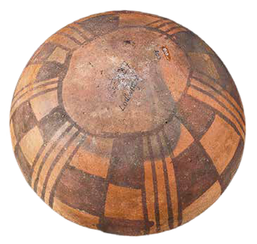
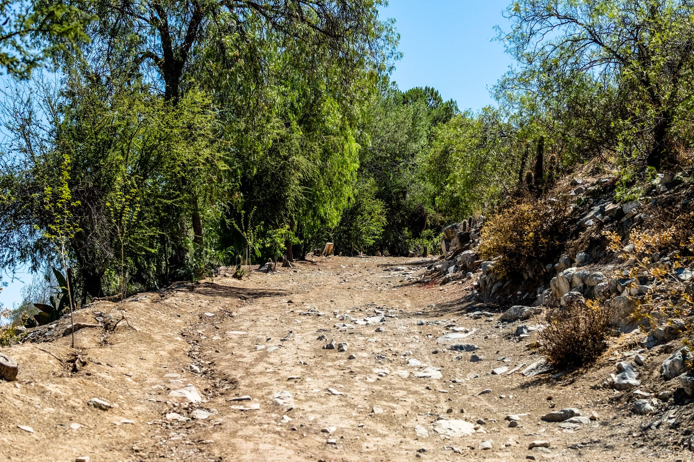
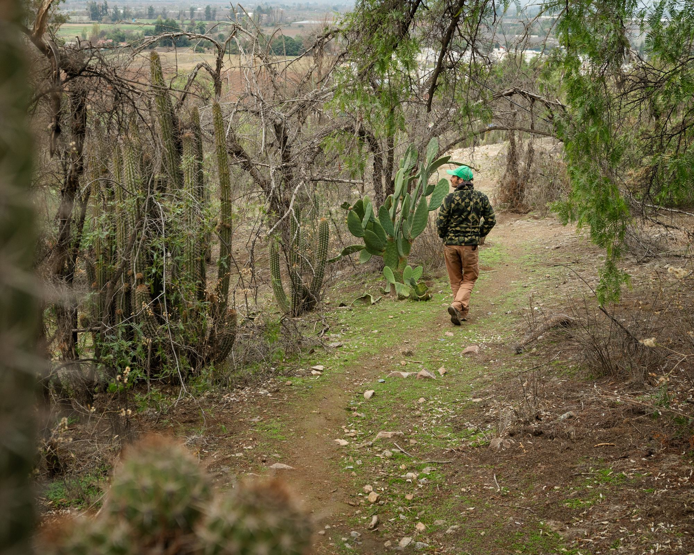
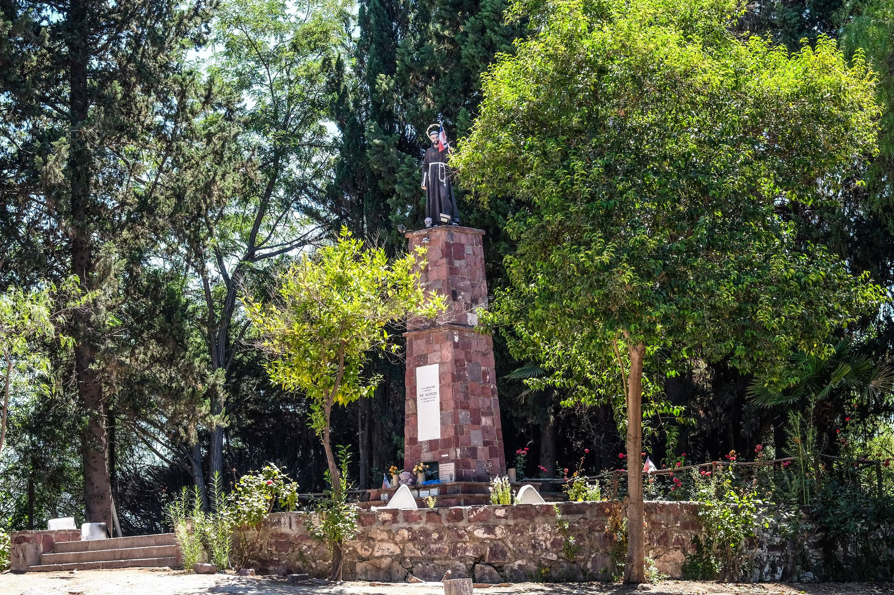
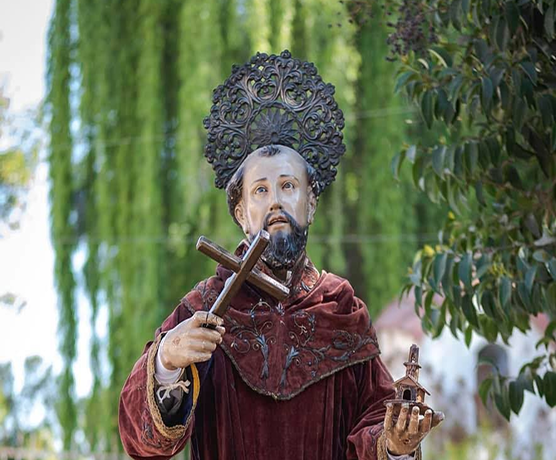
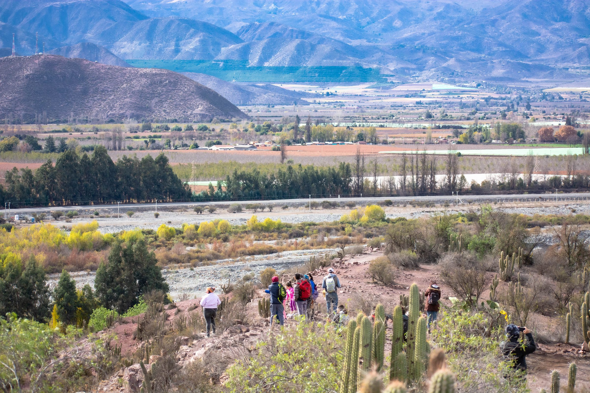

300 a.C. – 900 d.C.
Período agroalfarero temprano.
Poblaciones ocupaban los sectores precordilleranos.





Mucho antes de ser parque, el Cerro San Francisco fue un punto de referencia para quienes habitaron el Valle del Aconcagua. Desde su cumbre se domina el valle, y en sus laderas se recolectaron alimentos y leña, se abrieron piques mineros y se dio sepultura a los habitantes de Curimón.
Curimón, en mapudungún “tierras negras”, fue el primer asentamiento español del valle. El cerro acompañó cada etapa de esa historia: del Camino del Inca al Pueblo de Indios, del antiguo cementerio a la imagen de San Francisco que hoy corona su cima. Recorre su historia en la línea de tiempo.

Poblaciones ocupaban los sectores precordilleranos.

Actualmente Fundación Lepe, en conjunto con la comunidad local, está ejecutando un plan de regeneración ecológica y social, mediante actividades como jornadas comunitarias de reforestación con especies nativas, parcelas experimentales de restauración, realización de un banco de semillas para la propagación de especies nativas, y control de erosión, entre otras.

Desde 1979 Roberto Lepe desarrolló un plan de reforestación con especies nativas e introducidas, para hacer frente a la deforestación que había sufrido el cerro por la explotación de leña y recolección de frutos, raíces y tallos.
Actualmente Fundación Lepe, en conjunto con la comunidad local, está ejecutando un plan de regeneración ecológica y social, mediante actividades como jornadas comunitarias de reforestación con especies nativas, parcelas experimentales de restauración, realización de un banco de semillas para la propagación de especies nativas, y control de erosión, entre otras.

Flora y Fauna
Ésta es una guía en terreno desarrollada por el programa Vivo Curimón de Fundación Lepe. Para una óptima lectura y uso, te recomendamos descargarla en tu celular antes de visitar el Parque Natural Cerro San Francisco de Curimón, u otros ecosistemas similares. Toda la información de esta guía, te servirá para visitar otros entornos naturales similares.